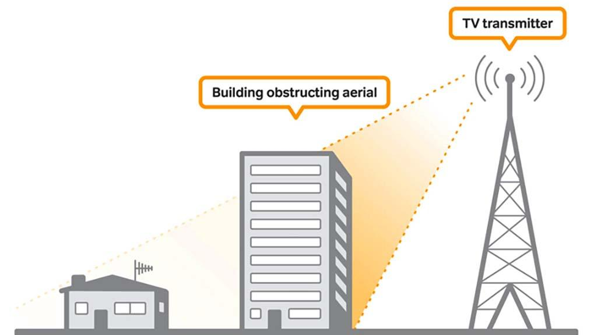

OSI Layers 1 & 2 — Physical & Data Link#
Scope: how raw bits become signals on a wire or in the air, and how those bits are grouped into frames and delivered between two directly connected devices.
Source: extracted and reorganised from
md/DOCUMENTATIONS ...md→SYSTEM_DESIGN vs BACKEND→PREVIOUS, OSI LAYERS, API DESIGN, Networking Essentials→OSI layers-(Open System Interconnection).
0. Where these layers sit#
| # | Layer | PDU (unit of data) | Address used | Typical devices |
|---|---|---|---|---|
| 2 | Data Link | Frame | MAC address | Switch, bridge, NIC, wireless access point |
| 1 | Physical | Bit / symbol | none | Cable, repeater, hub, transceiver, modem |
Encapsulation on the way down:
Application data
↓ Transport → segment (+ TCP/UDP header)
↓ Network → packet (+ IP header)
↓ Data Link → frame (+ MAC header + trailer/FCS)
↓ Physical → bits → signal on the mediumThe two layers are inseparable in practice. Every byte that leaves any device passes through the Physical layer, including traffic that never leaves the local network.
1. Physical Layer (Layer 1)#
1.1 Definition#
- Responsible for transferring raw data bits between the nodes of endpoints.
- Handles physical and electrical data transmission.
- Includes cables, connectors, plugs, receivers, transceivers.
- Defines hardware standards, voltage levels, pin layouts, and signal types.
It carries no addressing and no meaning. It moves 1s and 0s and nothing else.
1.2 Core functionality#
Encoding#
Converts data into signals that can travel through copper wire, fibre optics, or a wireless channel.
Decoding#
Turns those signals back into data at the receiver.
Modem — MOdulator / DEModulator#
The most common device that performs both jobs to connect a home to the internet.
| Term | Meaning |
|---|---|
| Modulation | Converting 010101 into a signal |
| Demodulation | Converting the signal back into 010101 |
| Carrier wave | A base wave whose properties are modified to carry the data |
1.3 Modulation techniques#
A carrier wave has three properties that can be changed to encode bits.
| Technique | What changes | Encoding |
|---|---|---|
| ASK — Amplitude Shift Keying | Height of the wave | 1 = high amplitude, 0 = low amplitude |
| FSK — Frequency Shift Keying | Frequency of the wave | 1 and 0 are two different frequencies |
| PSK — Phase Shift Keying | Phase of the wave | 1 and 0 are phase-shifted versions |
| QAM — Quadrature Amplitude Modulation | Amplitude and phase together | Several bits per symbol; used by WiFi, LTE, cable |
So under ASK, bits are encoded as strong signal vs weak signal.
1.4 How multiple signals are separated#
Signals sharing the same medium are kept apart by multiplexing:
- Cable / DSL / radio → often by frequency (FDM, Frequency Division Multiplexing).
- Modern networks (WiFi, 4G/5G) → a combination: frequency + time slots + codes.
Key point: frequency alone is not the main mechanism in modern systems. Frequency, time, and coding are used together (OFDMA in WiFi 6 and 5G is exactly this).
1.5 Where does one bit end and the next begin?#
If the signal is continuous, how do we know how many bits it holds?
Bits are determined by time intervals, not by signal length. A long signal is split into multiple bits based on the data rate.
You do not decide the interval dynamically. It is predefined by the data rate:
bit interval = 1 / data rateIf the link is 1 Mbps = 1,000,000 bits per second, then 1 bit = 1 microsecond.
Data-rate → bit-interval table#
| Data rate | Bits per second | Time per bit (interval) |
|---|---|---|
| 1 bps | 1 | 1 second |
| 1 Kbps | 1,000 | 1 millisecond (ms) |
| 10 Kbps | 10,000 | 0.1 ms (100 µs) |
| 100 Kbps | 100,000 | 10 µs |
| 1 Mbps | 1,000,000 | 1 µs |
| 10 Mbps | 10,000,000 | 0.1 µs (100 ns) |
| 100 Mbps | 100,000,000 | 10 ns |
| 1 Gbps | 1,000,000,000 | 1 ns |
| 10 Gbps | 10,000,000,000 | 0.1 ns |
Faster speed = smaller interval. Sender and receiver stay aligned using clock timing and encoding rules (line codes such as Manchester or 8b/10b embed a clock in the signal so the receiver can recover timing).
1.6 Transmission modes#

| Mode | Direction | Example |
|---|---|---|
| Simplex | One way only | Keyboard → computer, TV broadcast |
| Half duplex | Two way, but one at a time | Walkie-talkie, old Ethernet hub |
| Full duplex | Two way simultaneously | TCP, WebSocket, modern switched Ethernet |
Important correction found in the source notes: duplex mode is not decided by the Data Link layer per connection. It is determined by the hardware and network design. TCP already provides full-duplex communication at Layer 4, and WebSocket is full duplex on top of it.
1.7 Layer 1 standards and protocols#
- Ethernet (IEEE 802.3) — widely used for wired networks.
- Wi-Fi (IEEE 802.11) — wireless communication.
- Bluetooth (IEEE 802.15.1) — short-range wireless.
- USB (Universal Serial Bus) — device connection over short distances.
Note these standards straddle Layers 1 and 2: they define both the signalling (L1) and the framing / media access rules (L2).
1.8 Physical layer security#
| Threat | Description |
|---|---|
| Cable tapping | Attacker intercepts data by connecting directly to network cables |
| Physical access | Entry to server rooms or hardware areas allows theft or damage |
| Wireless signal interception | WiFi signals captured from outside with special tools |
| Hardware manipulation | Tampering with routers or USB ports to install harmful software |
Defence is physical: locked racks, port security, tamper-evident seals, and encryption at higher layers so a tapped cable yields only ciphertext.
2. Data Link Layer (Layer 2)#
2.1 Responsibility#
- Responsible for the node-to-node delivery of data within the same local network.
- Major role is to ensure error-free transmission of information.
- Also responsible for encoding, decoding, and organising outgoing and incoming data.
- Considered the most complex layer of the OSI model, because it hides all the underlying hardware complexity from the layers above.
Node-to-node delivery means communication between directly connected devices using MAC addresses, not end-to-end delivery across the internet.
A correction from the notes: the Data Link layer does not "transfer data from" the Physical layer. The Physical layer sends and receives bits; the Data Link layer frames and unframes them.
2.2 The two sublayers#
Logical Link Control (LLC)#
Deals with multiplexing, the flow of data among applications and other services, and is responsible for providing error messages and acknowledgments.
Media Access Control (MAC)#
Manages the device's interaction with the medium, is responsible for addressing frames, and controls physical media access. It receives information in the form of packets from the Network layer, divides packets into frames, and sends those frames bit-by-bit to the underlying Physical layer.
2.3 Frame structure (Ethernet II)#
+----------+----------+---------+-------------------+-----+
| Dest MAC | Src MAC | Type | Payload (46-1500) | FCS |
| 6 bytes | 6 bytes | 2 bytes | bytes | 4 |
+----------+----------+---------+-------------------+-----+- Dest / Src MAC — 48-bit hardware addresses.
- Type — what is inside (0x0800 = IPv4, 0x86DD = IPv6, 0x0806 = ARP).
- FCS — Frame Check Sequence, a CRC-32 used for error detection. A frame that fails the check is dropped, not repaired.
The 1500-byte payload limit is the standard Ethernet MTU, which is why the Network layer above may need to fragment.
2.4 MAC address resolution in a LAN — the ARP flow#
You want to send data to 192.168.1.20. You know the IP. You do not know the MAC.
Step 1 — You only know the IP
IP = 192.168.1.20
MAC = unknownStep 2 — ARP Request (broadcast) Your laptop asks everyone: "Who has 192.168.1.20?" Sent to FF:FF:FF:FF:FF:FF, the broadcast address, so every device in the LAN sees it.
Step 3 — ARP Reply (unicast) The target laptop responds: "I have that IP. My MAC = AA:BB:CC:DD:EE:FF."
Step 4 — Store in the ARP table
192.168.1.20 → AA:BB:CC:DD:EE:FFCached for a few minutes so the broadcast is not repeated per packet.
Step 5 — Create the data frame
Source MAC = your laptop's MAC
Destination MAC = target laptop's MACStep 6 — Physical transmission The frame becomes electrical or radio signals and is sent through the switch, router, or cable.
Step 7 — Receiver gets it Checks the destination MAC. If it matches, it accepts the frame and passes the payload up to IP → TCP → the application.
One-line memory#
IP identifies the destination → ARP finds the MAC → frame is created → Physical layer sends signals → receiver accepts by MAC.
Interview version#
"To send data in a local network, the device uses ARP to resolve the destination IP into a MAC address, stores it in the ARP cache, then encapsulates the data into an Ethernet frame and sends it via the Physical layer."
Where the addresses come from#
| Address | How the device gets it |
|---|---|
| Own MAC | Taken directly from the NIC hardware (burned in at manufacture) |
| Peer MAC | Resolved with ARP inside the LAN |
| Own IP | Usually from a DHCP server, or configured manually |
| Peer IP | From DHCP, static configuration, or DNS resolution |
Both addresses are needed at once: IP identifies the final destination, MAC is used for local hop delivery.
2.5 Devices#
1. Switch#
- The key device of the Data Link layer.
- Uses MAC addresses to forward frames to the correct device.
- Works in local area networks to connect multiple devices.
- Builds a MAC address table by learning source addresses from incoming frames.
2. Bridge#
- Connects two or more LANs into a single unified network.
- Operates at Layer 2 by forwarding frames based on MAC addresses.
- Used to reduce network traffic and segment a network.
3. Network Interface Card (NIC)#
- Hardware component in computers, printers, and similar devices.
- Adds the MAC address to frames and handles communication with the network.
4. Wireless Access Point (WAP)#
- Allows wireless devices to connect to a wired network.
- Manages wireless MAC addresses at Layer 2.
- Uses protocols like Wi-Fi (IEEE 802.11).
5. Layer 2 switches#
- Specialised switches that operate only at Layer 2, unlike multilayer switches.
- Forward frames using MAC address tables.
Security note: the Data Link layer can be targeted by attacks like MAC spoofing or ARP poisoning. Understanding how devices and frames operate at this layer helps detect and mitigate such threats. Mitigations include dynamic ARP inspection, port security, and 802.1X authentication.
2.6 Limitations#
- Limited scope — operates only within a local network; cannot handle end-to-end communication across different networks.
- Increased overhead — headers, trailers, and redundant data for error correction increase transmitted size.
- Error handling dependency — can detect and correct some errors, but relies on upper layers for more complex issues.
- No routing capability — cannot make routing decisions; only ensures delivery within the same network segment.
- Resource usage — flow control and error correction consume extra processing power and memory.
2.7 Applications#
- Local Area Networks (LANs) — reliable communication between devices using Ethernet (IEEE 802.3).
- Wireless networks (Wi-Fi) — communication via IEEE 802.11, handling media access and error control.
- Switches and MAC addressing — forwarding frames to the correct device.
- Point-to-point connections — protocols like PPP establish and manage direct communication between two nodes.
3. Q&A — Layers 1 & 2#
Signals and encoding#
How is binary converted to signals? By modulating a carrier wave, changing amplitude, frequency, or phase.
How does modulation work? It encodes 0 and 1 by modifying properties of a signal wave.
How are multiple signals separated? By using different frequencies, time slots, or codes.
Is frequency mainly used? No. Modern systems use frequency, time, and coding together.
How do we know how many bits are in a signal? By dividing the signal using fixed time intervals (bit duration).
How is the bit interval decided? It is defined by the data rate in bits per second.
Data rate table rule? Bit interval = 1 / data rate. Faster speed means a smaller interval.
How does a modem convert 0 and 1? By encoding bits onto a carrier wave.
How are bits separated from the signal? By using clock timing and encoding rules.
What is a carrier wave? A base wave whose properties are modified to carry data.
OSI and Data Link#
Are there 7 OSI layers? Yes, from Application at the top to Physical at the bottom.
Does the Data Link layer control duplex mode? No. Duplex is determined by hardware and network design, not per connection.
Simplex, half duplex, full duplex? One-way, two-way alternately, and two-way simultaneously.
Is the Data Link layer node-to-node delivery? Yes. It handles delivery between directly connected devices.
Does data skip the Physical layer inside the same network? No. All data always passes through the Physical layer.
Does the Data Link layer add the MAC address? Yes. It adds source and destination MAC addresses in frames.
How is the source MAC known? It is taken directly from the device's NIC hardware.
How do we find another device's MAC? Using ARP: a broadcast request and a unicast reply.
What is the ARP flow? Broadcast request → reply → store MAC → send frame.
Is IP also used? Yes. IP identifies the destination, MAC is used for local delivery.
How do we get an IP? Usually from a DHCP server, or by manual configuration.
Is the Physical layer only in routers? No. It exists in every network device.
Does the Data Link layer "transfer" data from the Physical layer? No. The Physical layer sends bits; the Data Link layer frames and unframes them.
Does the Data Link layer decide direction after TCP? No. TCP already provides full-duplex communication.
Is WebSocket full duplex? Yes. Both sides can send data simultaneously.
What is node-to-node delivery? Communication between directly connected devices using MAC addresses.
4. Quick revision sheet#
| Question | Layer 1 | Layer 2 |
|---|---|---|
| Unit | Bit | Frame |
| Address | none | MAC (48-bit) |
| Job | Move signals | Node-to-node delivery, error detection |
| Error handling | none | CRC / FCS detection, drop on failure |
| Devices | Cable, hub, repeater, modem | Switch, bridge, NIC, WAP |
| Protocols | Ethernet PHY, 802.11 PHY, DSL, USB | Ethernet MAC, 802.11 MAC, PPP, ARP |
| Attacks | Cable tapping, signal interception | MAC spoofing, ARP poisoning |
One sentence each
- Layer 1 moves bits as signals over a medium and knows nothing about who they are for.
- Layer 2 groups bits into frames, addresses them with MAC, and delivers them across one hop of the local network.